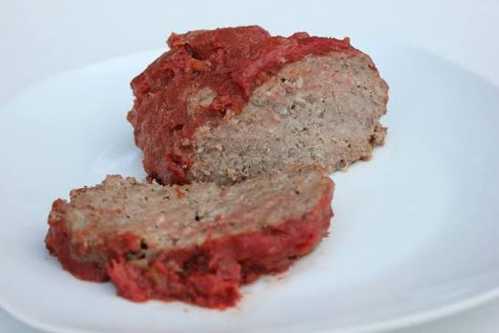

Meatloaf

Description
Meatloaf may get a bad reputation, but this recipe satisfies everyone at Sunday dinner. There are enough veggies to make this a stand-alone entree, or you can pair it with a salad or steamed broccoli for an even healthier meal.
Ingredients:
2lbs ground beef, 80% lean
3Tbsp fresh parsley, finely chopped
For the Sauce:
Steps:
Preheat the oven to 350 degrees. Line a rimmed baking sheet or cast iron skillet with parchment paper.
In a large bowl, mix all the meatloaf ingredients until well combined.
Add the meat to the pan and shape into a loaf. It is best to have space around the loaf so it cooks easier. A slight dip in the center can help the middle cook evently.
Bake uncovered for about 40 minutes.
In a small bowl, mix the sauce ingredients until combined.
Spread the sauce over the meatloaf and return to the oven to bake for another 20 minutes. The internal temperature should reach 160 degrees.
Rest the meatloaf for 10-15 minutes before slicing to serve.
Home